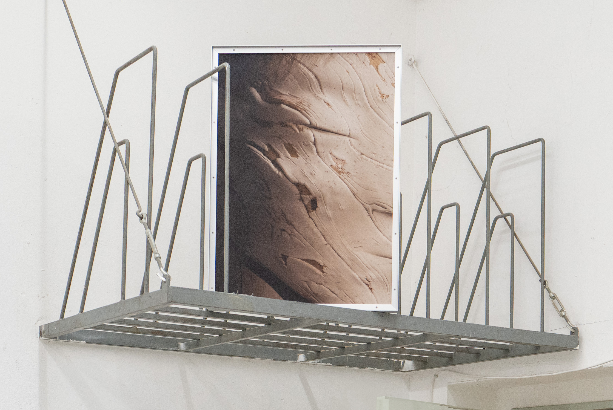
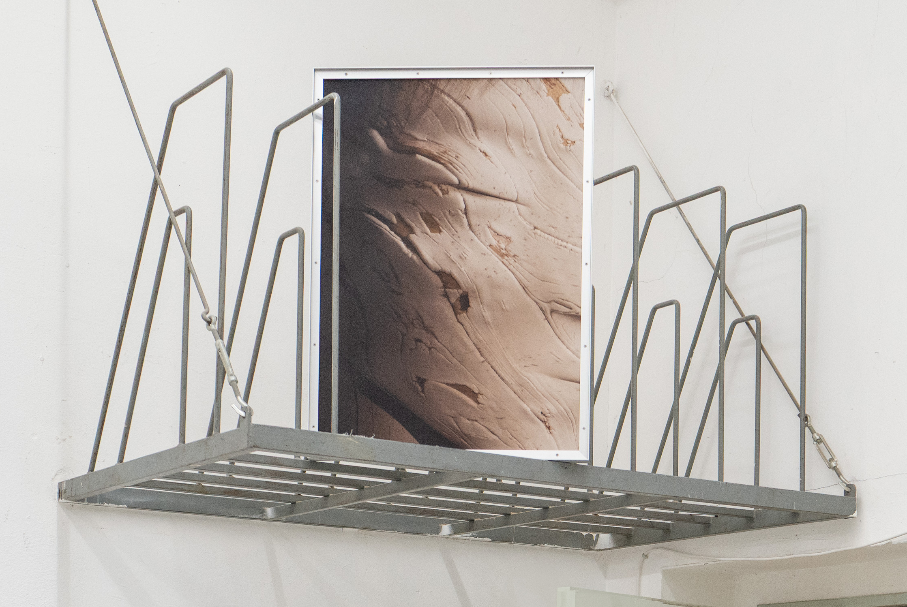

Pinocchio is a series of two large-format prints showing a digitally modeled boy whose skin is rendered as wood. Exhibited in the corridor of the Städelschule Rundgang I11 2026, the prints were placed to create an unavoidable one-on-one encounter with the figure. He has no mouth. Strings emerge from his head. The viewer's gaze is met before a decision to look has been made.
The work departs from the logic of the modeling agency composite — a body assembled to be looked at, optimized for the imagination of others. Caught between spaces, between object and subject, the figure neither performs nor withdraws. He simply stands there.
Pinocchio I
Print on Hahnemühlen paper, custom aluminium frame
125 × 85 cm
Pinocchio II
Print on Hahnemühlen paper, custom aluminium frame
85 × 65 cm

 
